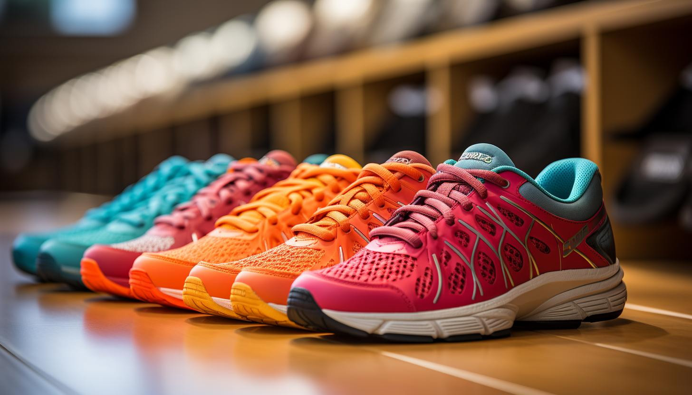

Gaming
Gaming has been a big part of my life. I've been gaming from the age of 4 with my family on the Nintendo Wii. Nowadays I partially spend my weekend indulging in the latest craze or finding ways to better my Wii by modding my old games and squeezing a bit of life into them all these years later.
I've found people through online play but also made connections with my school friends through online play as well. I am a very competitive person
which makes it all the more exciting when I'm aware that I am improving.

Running
I've always had a love for running from a young age. I was a fast sprinter in my primary school which I was proud of because I didn't even play sports. I used to run all around the farm and jump on the trampoline as an outlet for all my energy. I ran less and less until I did my Bronze and Silver
Gaisce in secondry school. Now in university I decided to join a running club to improve my fitness and also as a balence for my love of the gym. I love the effect running is having on my life mentally and I'm sure I will definately keep it up in the future.
